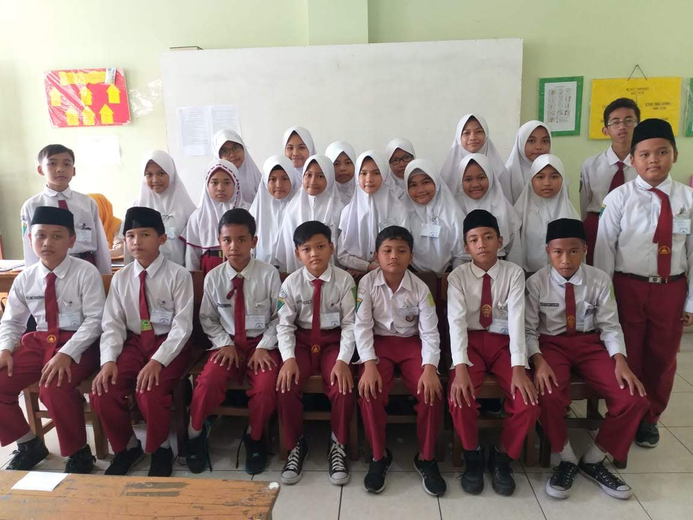

Masa SD adalah masa di mana saya mengenal banyak hal untuk pertama kalinya. Mulai dari belajar menyesuaikan diri dengan teman-teman, belajar bertanggung jawab, sampai merasakan serunya memiliki sahabat yang selalu bersama setiap hari.
Waktu memang berjalan cepat. Anak-anak kecil dengan seragam merah putih itu sekarang sudah tumbuh dan memiliki jalan hidup masing-masing. Namun kenangan masa SD akan selalu menjadi bagian indah yang tidak mudah dilupakan.